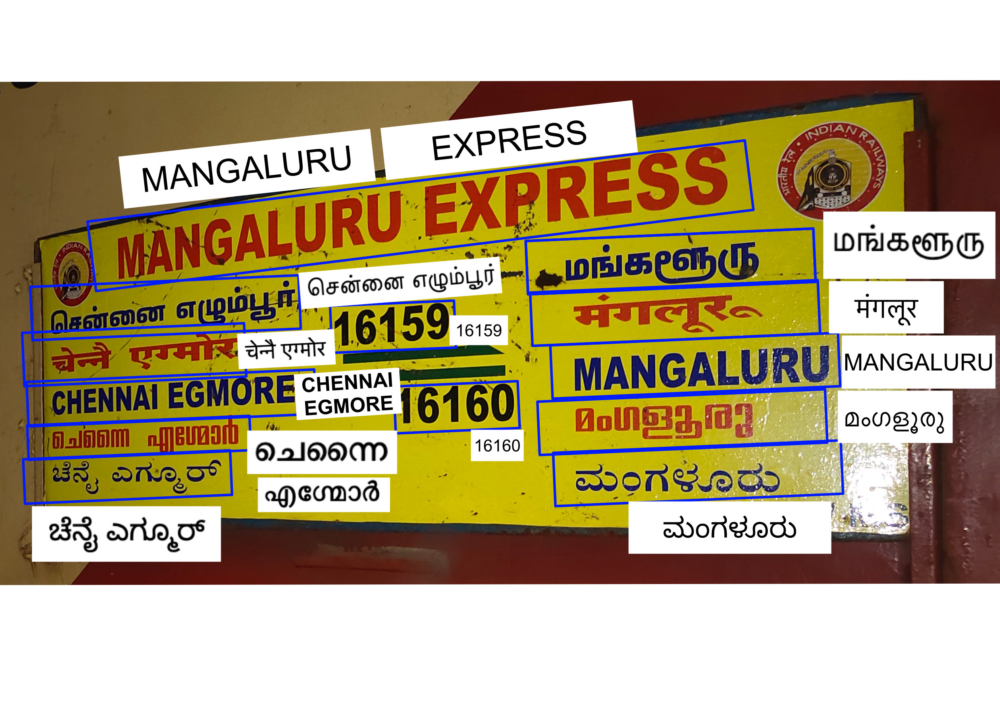
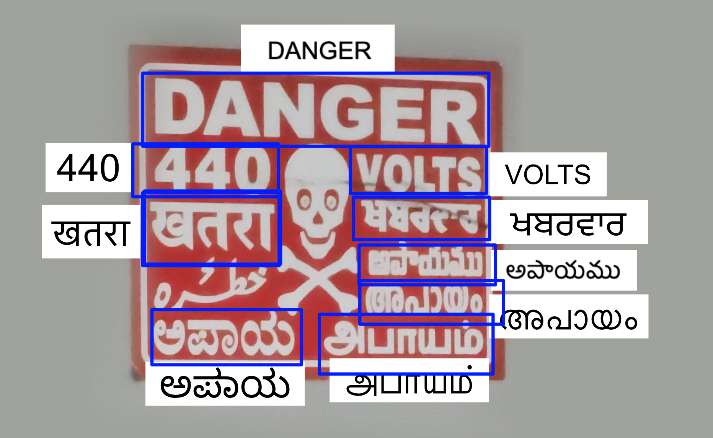
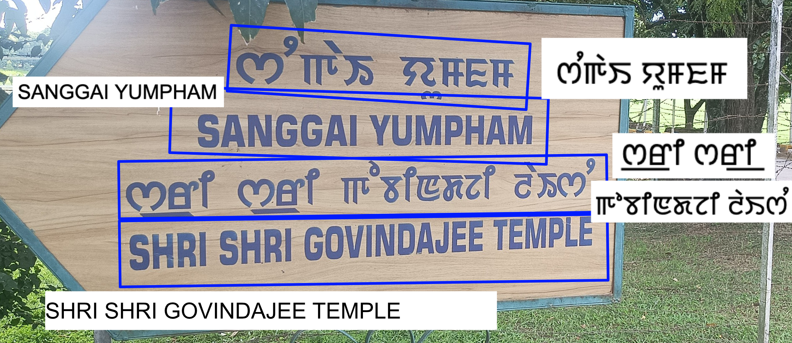
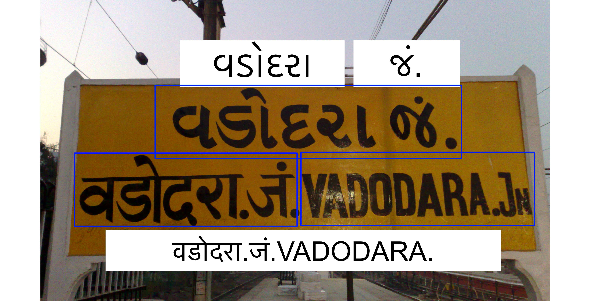
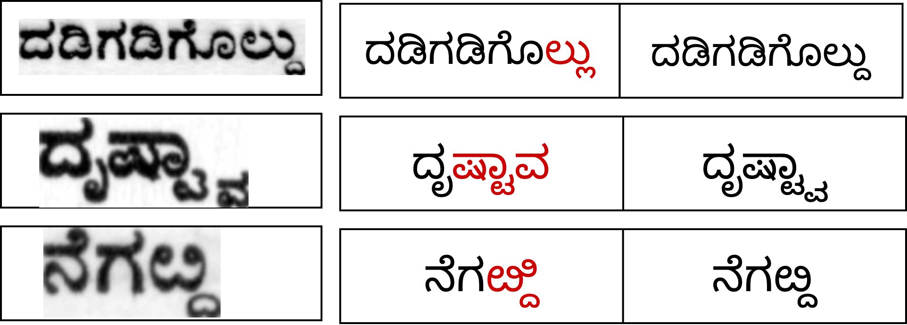
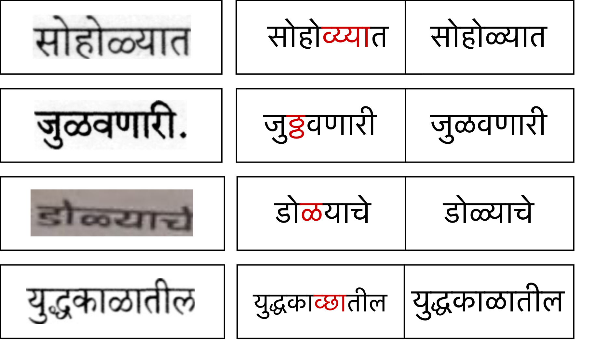

Train Together: Towards Multilingual OCR Models for Low-Resource Languages


Abstract
Despite the rapid advancement of Vision-Language Models (VLMs), their linguistic reach remains largely confined to high-resource languages, leaving the majority of the world's 7,000+ living languages on the wrong side of a growing digital divide. This disparity is especially pronounced in Optical Character Recognition (OCR), where low-resource scripts lack the massive datasets required for traditional scaling laws. We investigate OCR adaptation in extreme data-scarce regimes (<10K real and <250K synthetic images), demonstrating that conventional fine-tuning strategies often reach a performance ceiling. Our key finding reveals a structural inefficiency in language-specific adaptation: while higher layers of specialized models diverge to capture unique script nuances, the lower layers learn redundant, highly similar features. Motivated by this observation, we propose PSMC (Pre-train, Specialize, Merge, and Co-train), a data-efficient framework that capitalizes on a cross-script "transfer effect". Our approach first derives language-specific experts from a high-resource base model, then employs task arithmetic to fuse these experts into a unified, high-performance multilingual backbone. Extensive evaluation across 10 Indian scripts (supporting 20+ languages) shows that PSMC achieves on average a ∼13% relative reduction in Word Error Rate (WER) over individual specialist models without increasing parameter count. Our results indicate that joint training in the merged latent space facilitates a constructive knowledge transfer that benefits all constituent scripts, providing a scalable pathway for inclusive VLM development. Source code and datasets will be released post-publication.
Motivation & Methodology
Low-resource OCR models trained independently on individual scripts learn redundant low-level features in their lower layers, while only the higher layers diverge to capture script-specific nuances. Mean Central Kernel Alignment (CKA) analysis across script-specific expert models reveal this structural inefficiency. This finding directly motivates cotraining a multilingual model and unifying a more generalized learning of low level features across scripts.
Our contribution, PSMC offers a multi-step approach to addresses this inefficiency in training multiple individual models for multiple scripts with a four-stage pipeline:
- Pre-train a strong unilingual base,
- Specialize per-script expert models,
- Merge experts via task arithmetic to fuse complementary knowledge without adding parameters, and
- Co-train the merged backbone jointly across all scripts to consolidate a constructive cross-script transfer effect.
Results
Recognition Output Examples







BibTeX
@inproceedings{psmc2026,
title={Train Together: Towards Multilingual OCR Models for Low-Resource Languages},
author={Achyuth P and Kahaan Shah and Chetan Arora},
booktitle={ICDAR},
year={2026},
url={https://vision-iitd.github.io/projects/PSMC/}
}